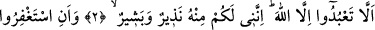

YALNIZ ALLAH’A KULLUK
Rahmân ve Rahîm olan Allah’ın adıyla.
1. Elif Lâm Râ. (Bu Kur’an öyle) bir kitaptır ki hikmet sahibi, her şeyden
haberdar olan (Allah) tarafından âyetleri sağlamlaştırılmış, sonra da güzelce
açıklanmıştır.
2. Tâ ki Allah’tan başkasına tapmayasınız. Şüphesiz ben de O’ndan size
(gönderilmiş) bir uyarıcı ve müjdeciyim.
3. Ve Rabb’inizden mağfiret dileyesiniz, sonra da O’na tevbe edesiniz ki, sizi
belirlenmiş bir süreye kadar güzelce yaşatsın ve her lütuf sahibine lütfetsin. Eğer
yüz çevirirseniz, ben sizin için büyük bir günün azâbından korkarım.
4. Dönüşünüz Allah’adır. O, her şeyi yapacak güçtedir.
5. İyi bilin ki onlar O’ndan gizlenmek için göğüslerini çevirirler. Yine iyi bilin ki
onlar örtülerine büründükleri zaman dahi (Allah onların) gizlediklerini de açığa
vurduklarını da bilir. Çünkü O, kalplerin özünü bilendir.
et-Te’vîlâtü’n-Necmiyye’de şöyle der: “Allah” ismi Allah’ın zâtına “Rahmân” celal
sıfatına ve “Rahîm” cemal sıfatına işaret etmektedir. Bunun mânâsı şudur: Bu iki sıfat,
Allah Teâlâ’nın zâtı ile kâimdir, diğer isimler ise bu iki sıfatı içlerinde
bulundurmaktadır. Bu iki sıfat kahır ve lütuf sıfatlarındandır.
“Elif Lâm Râ” yâni, bu sûre Elif Lâm Râ sûresidir, bu isimle isimlendirilmiştir,
demektir. Meydan okumak ve âciz bırakmak (i‘câz) şeklinde serdedilmiştir. Bu sûrede
âşikar olan budur.
Müfessirler, “Hurûf-i mukattaa ile neyi kastettiğini en iyi Allah bilir. Çünkü onlar